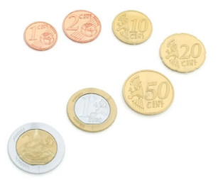

I. Les algorithmes gloutons¶
TD : Le problème du rendu de monnaie¶

Un distributeur automatique doit pouvoir rendre la monnaie sur une somme donnée par un utilisateur. Pour arranger celui-ci, on veut rendre la monnaie avec un nombre minimal de pièces.
On utilise un système monétaire simplifié, constitué des pièces suivantes : 200, 100, 50, 20, 10, 5, 2, et 1 euro.
A. Etude du problème¶
-
Proposer deux façons de rendre la monnaie sur la somme 43. Quelle solution est optimale ?
-
Quelles sont les données d'entrée de notre problème ? La sortie ? Quel type de variable utiliser pour stocker ces informations ?
-
Compléter le schéma suivant avec les entrées et sorties du problème traité.
graph LR
....................... --> F[algorithme];
........................ --> F;
F --> ......................B. Principe de l'algorithme¶
Définition
La solution très souvent utilisée pour résoudre ce problème est celle de l'algorithme glouton : un algorithme qui fait le "meilleur" choix à chaque étape. On espère qu'au final, on trouvera la meilleure solution globale.
- Compléter la description de l'algorithme qui convient à notre cas :
On cherche à minimiser une quantité : le nombre de pièces. On choisit donc les pièces les plus petites / grandes possibles, de valeur inférieure à la somme qu'il reste à rendre, jusqu'à avoir complètement rendu la monnaie.
Le meilleur choix consiste donc ici à minimiser / maximiser la valeur de la pièce choisie à chaque étape.
-
Vérifier qu'en appliquant cet algorithme pour rendre la somme de 36, avec le système monétaire indiqué plus haut, on obtient une solution optimale.
-
On considère les pièces de la plus grande à la plus petite, donc dans l'ordre : [200, 100, 50, 20, 10, 5, 2, 1]. On commence par considérer la première, et on passe à la suivante si sa valeur dépasse celle de la somme à rendre.
Détailler l'évolution des valeurs indiquées dans le tableau suivant, lorsqu'on applique l'algorithme glouton pour rendre la somme de 36 :
| Somme à rendre | Pièce | Pièce <= Somme à rendre | Pièces utilisées |
|---|---|---|---|
| 46 | 200 | False | [] |
C. Formulation de l'algorithme¶
-
Sait-on à l'avance combien d'étapes seront nécessaires pour faire le rendu ? En déduire l'élément de programmation qu'il faut utiliser.
-
A chaque étape (comme celles détaillées dans la partie B), on distingue deux cas. Quels sont-ils ? Que fait-on dans chacun de ces cas ?
-
Proposer une formulation de l'algorithme glouton sous la forme d'un pseudo-code.
Se connecter à Capytale et entrer le code a716-1682862.
-
Compléter la fonction
rendu_gloutonprenant en paramètres les deux entrées identifiées, et renvoyant une sortie. Vérifier que l'assertion correspondant à l'appelrendu_glouton(36, [200, 100, 50, 20, 10, 5, 2, 1])fonctionne bien. -
Le système impérial utilise les pièces de valeurs suivantes : 30, 24, 12, 6, 3, 1. Appeler
rendu_gloutonpour rendre la valeur48avec ce système de monnaie. Obtient-on le résultat optimal ?
TD : Le problème du sac à dos¶
Introduction¶
Un voleur rentre dans une maison et dispose de peu de temps pour collecter son butin. Il dispose d'un sac à dos pour mettre les objets qu'il trouvera, pouvant supporter une masse maximale de 10 kg. Il veut maximiser la valeur totale des objets mis dans son sac.
L'objectif est de définir un algorithme permettant d'optimiser cette valeur totale, en respectant la contrainte de la masse maximale que le sac peut supporter.
| Objet | Ordinateur | Collier | Guitare | Vase | Chaîne Hi-Fi |
|---|---|---|---|---|---|
| Numéro | 0 | 1 | 2 | 3 | 4 |
| Valeur (euros) | 800 | 100 | 500 | 60 | 500 |
| Masse (kg) | 4 | 0.15 | 4 | 1.85 | 7 |
| ................................... (partie B) |
A. Un premier algorithme¶
- Une première méthode pour remplir le sac serait de tester toutes les possibilités et de sélectionner la meilleure. Expliquer comment faire, en appliquant cette méthode, pour trouver la solution optimale.
- Le choix de chaque objet est binaire : il est choisi ou il ne l'est pas. Combien de possibilités y a-t-il (sans considérer pour l'instant la contrainte de la masse totale) avec 5 objets ? Combien y en aurait-il avec 100 objets ? Que peut-on en conclure sur la durée d'exécution d'un tel algorithme ?
- Appliquer cet algorithme dans notre cas, en ne donnant que les possibilités permettant de rester en-dessous de la masse maximale de 10 kg.
B. Un algorithme glouton¶
- Utiliser un algorithme glouton permet de limiter le nombre d'opérations. Pourquoi peut-on dire cela ?
- Entre l'ordinateur et la guitare, quel choix conseilleriez-vous au voleur ? Pourquoi ? Même question pour choisir entre la guitare et la chaîne hi-fi.
-
Pour appliquer un algorithme glouton, il faut optimiser (maximiser ou minimiser) un critère. Plusieurs critères sont possibles ici, sélectionner celui qui vous semble le plus pertinent dans la liste ci-dessous :
- Choisir d'abord l'objet ayant la plus grande / la plus petite valeur.
- Choisir d'abord l'objet le plus lourd / le plus léger.
- Choisir d'abord l'objet ayant la valeur massique, c'est-à-dire le rapport
 le plus grand / le plus petit.
le plus grand / le plus petit. - Prendre le plus d'objets possible.
-
Rajouter, dans le tableau de l'introduction, sur la dernière ligne, la valeur massique.
-
Comment serait-il judicieux de classer les objets ? Associer chaque objet à leur nouveau numéro, après avoir fait ce classement.
- Appliquer l'algorithme glouton ajoutant les objets un à un, en maximisant le rapport
 de l'objet.
de l'objet.
| Objets ajoutés en maximisant la valeur massique : |
|---|
C. Implémentation de l'algorithme¶
-
Quelles sont les données d'entrée du problème qu'il faut stocker ? Quel type de variable utiliser pour le faire ?
-
Jusqu'à quand choisit-on un nouvel objet à mettre dans le sac ? En déduire l'élément de programmation à utiliser.
-
Quel est le résultat qu'il faut renvoyer en sortie ? Comment stocker cette information ?
-
En déduire un pseudo-code de l'algorithme. On suppose les objets triés par valeur massique décroissante.
Se connecter à Capytale et entrer le code a716-1682862.
- Compléter la fonction
sac_a_dosen traduisant ce pseudo-code en Python. Dans le test donné, les valeurs et les masses de notre problème ont été triées à la main par valeur massique décroissante. Vérifier que la fonction est correcte grâce à l'assertion.
Cours¶
A. Définition¶
Définition
Un algorithme glouton est un algorithme optimisant un critère à chaque étape, sans se soucier des conséquences sur la solution globale obtenue quand l'algorithme se termine.
Il fait le choix le plus optimisé à chaque étape : cela peut consister à maximiser une quantité ou à la minimiser, en fonction du problème. La quantité considérée dépend aussi du problème, et plusieurs quantités peuvent être choisies (comme dans le problème du sac à dos).
B. Exemples de problèmes¶
B.1. Le problème du rendu de monnaie¶
Formulation du problème¶
On veut rendre la monnaie sur une somme donnée, en utilisant le moins de pièces possible, dont les valeurs appartiennent à un système de monnaie.
On suppose que l'on peut rendre la monnaie de manière exacte avec le système de monnaie.
Algorithme glouton pour le résoudre¶
Critère choisi
On maximise la valeur de chaque pièce choisie, en restant en-dessous de la valeur à rendre.
Pseudo-code
Entrées :
un entier somme
un système de monnaie pieces
Sortie :
un tableau de pieces pieces_rendues, triées par valeurs décroissantes
pieces_rendues <- liste vide
i <- 0 # indice de la première pièce
somme_a_rendre <- somme # ce qu'il reste à rendre
tant que somme_a_rendre différente de 0
si pieces[i] supérieure à somme_a_rendre
on incrémente i
sinon
on ajoute pieces[i] au tableau pieces_rendues
on enlève pieces[i] à l'entier somme_a_rendre
Cet algorithme se termine-t-il ? Justifier.
Cet algorithme se termine car on a supposé que l'on pouvait rendre la monnaie avec notre système de monnaie, donc somme_a_rendre va décrémenter jusqu'à la valeur 0.
Cet algorithme est-il toujours optimal ? De quoi cela dépend-il ?
Cet algorithme n'est pas toujours optimal, cela dépend du système de monnaie utilisé. Il est optimal pour le système des euros.
On appelle canonique un système de monnaie qui permet de rendre une somme de manière optimale avec un algorithme glouton.
B.2. Le problème du sac à dos¶
Formulation du problème¶
On veut remplir un sac à dos avec des objets ayant une valeur et une masse. On veut que le sac contienne la valeur totale la plus grande possible, et sa masse ne peut pas dépasser une masse maximale donnée.
Algorithme glouton pour le résoudre¶
Critère choisi
On peut choisir de maximiser la valeur de chaque objet, ou bien (version plus optimale) de maximiser le rapport \(valeur/masse\), soit la valeur massique.
Pseudo-code
On suppose les objets déjà triés selon le critère que l'on a choisi : les éléments des tableaux des masses et des valeurs sont rangés dans l'ordre optimal pour note algorithme glouton.
Entrées :
le tableau des valeurs des objets
le tableau des masses des objets
la masse_maximale du sac
Sortie :
le tableau des objets à mettre dans le sac
objets <- tableau vide
masse_sac <- 0
pour chaque objet d'indice i
si masses[i] + masse_sac inférieure à masse_maximale
on ajoute i au tableau objets
on ajoute masse[i] à masse_sac
Complexité : Quelle est la complexité de cet algorithme ?"
Cet algorithme a une complexité linéaire par rapport au nombre d'objets.
Ce problème du sac à dos est un problème particulier : c'est un problème difficile à résoudre de manière optimale, et plusieurs autres problèmes peuvent se ramener à lui.
Exemples
- choisir les projets les plus rentables que doit choisir une entreprise (les projets n'ont pas une masse et une valeur mais un temps de réalisation et un gain et la masse maximale correspond ici à au temps de travail maximal),
- dans la découpe de matériaux, pour minimiser les pertes (les matériaux ont eux une surface et une valeur),
- charger une cargaison (avions, camions, bateaux...) de manière optimale.
Conclusion¶
Les algorithmes gloutons ne fournissent pas toujours une solution optimale à un problème, mais s'en approchent souvent et permettent de réduire la complexité d'algorithmes plus naïfs qui exploreraient toutes les possibilités.